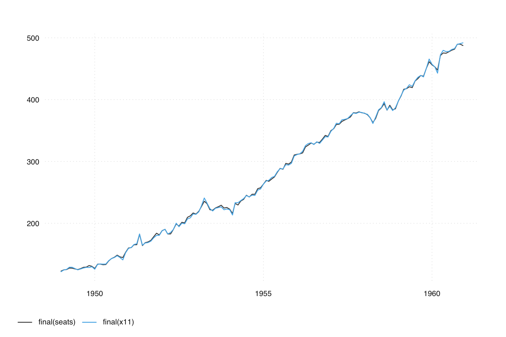
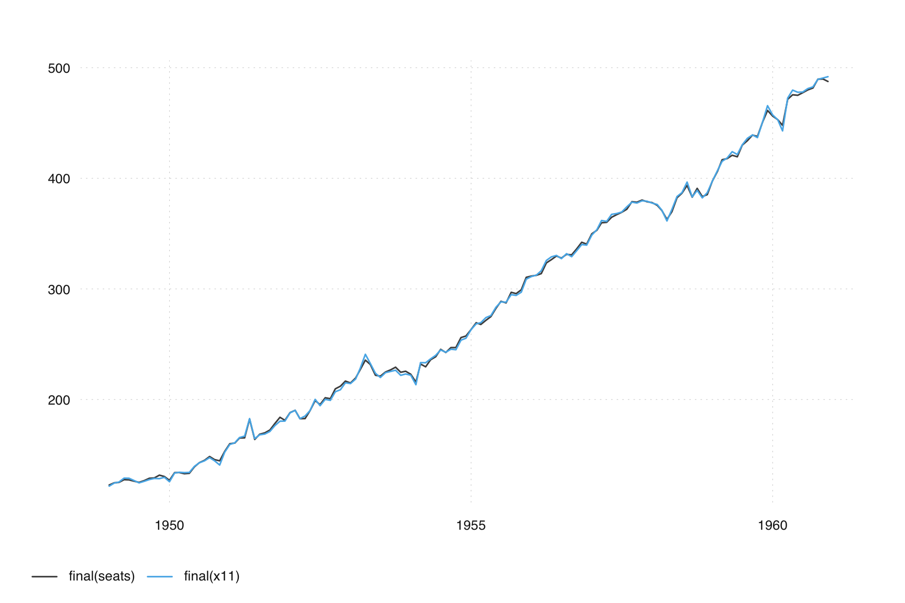
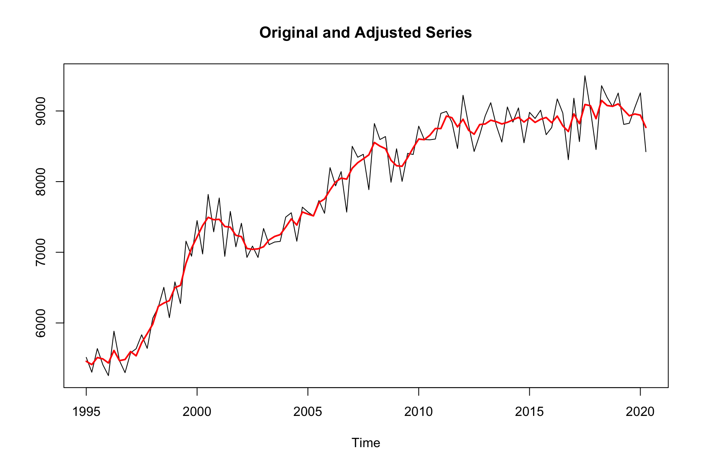
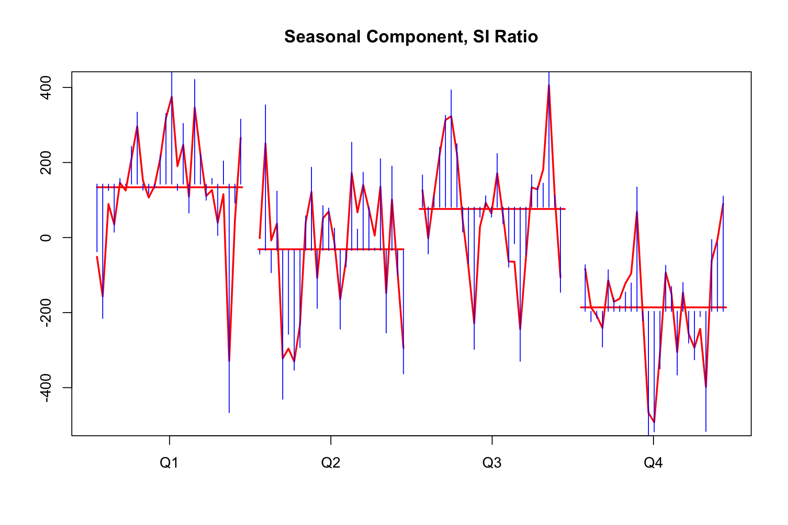
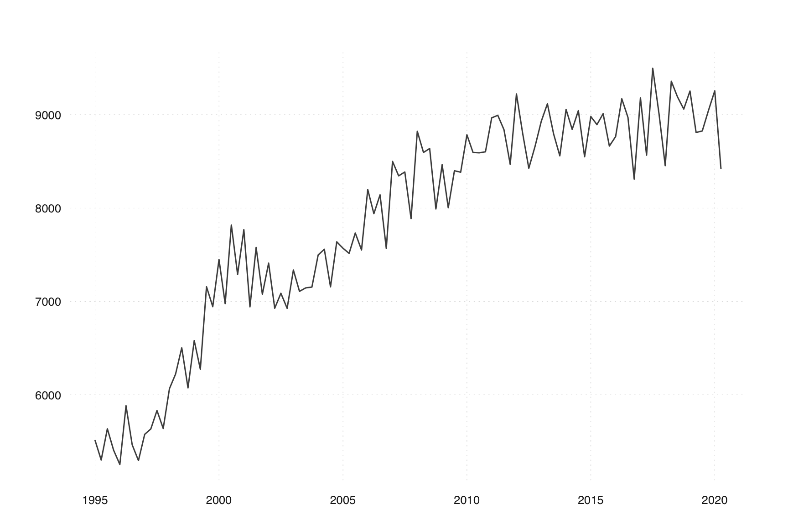

seats <- seas(AirPassengers)
x11 <- seas(AirPassengers, x11 = list())
tsbox::ts_plot(final(seats), final(x11))
You are reading an early draft of Seasonal Adjustment in R. This chapter should be readable but needs polishing.
It is part of the course materials intended for Jan 21, 2023.
Signal Extraction in ARIMA Time Series, or SEATS, is a method for estimating unobserved components in a time series. It is developed from the work of Cleveland and Tiao (1976), Hillmer and Tiao (1982), Maravall (1986). If applied properly, SEATS seasonal factors are usually more stable than X-11, and the seasonally adjusted series show less revisions than X11 (see Section 7.10 for a more extensive discussion).
Like X-11, SEATS applies a series of filters to an observed time series, as described in Section 6.1. Like X-11, SEATS uses a forecast extended series, in order to obtain unbiased results at the margin.
Unlike X-11, however, SEATS filters are derived from the ARIMA model of the time series. While X-11 filters are predefined and fixed, the SEATS filters are different for each ARIMA model.
While X-11 offers a finite set of filters (in fact, there are seven seasonal filters available), SEATS offers an infinite set of filters. Overall, they cover a broader set of possible filter lengths, which makes SEATS a more flexible option than X-11. The available set filter lengths is the most crucial difference between X-11 and SEATS. At the same time, the additional flexibility may lead at times to filters that are undesirable. As will be shown later on, SEATS sometimes choose a filter that is too narrow, and produces an overly volatile seasonal component.
Plots of X-11 filters vs SEATS filters
Given a certain ARIMA model (such as the “Airline” (0 1 1)(0 1 1) model which is appropriate for the description of the AirPassengers time series), SEATS decomposes the model into separate models for the trend, the seasonal and the irregular component. This is done by the Canonical Decomposition and will be discussed in Section 7.6.
The decomposition of the ARIMA model is almost independent of the data. For each ARIMA specification, there is a unique canonical decomposition. For a normal “Airline” (0 1 1)(0 1 1) model (with both moving average coefficients not being to close to 1), the trend component can be described with a (0 2 2)(0 0 0) model, while the seasonal component can be described approximately by a (0 0 11)(0 0 0) model. The parameters of these models can be derived from the parameter estimations of the initial airline model that describes the original series. The irregular component is usually white noise, described by the trivial (0 0 0)(0 0 0) model.
The decomposed ARIMA models imply a certain filter, which is derived by the Wiener-Kolmogorov procedure (Section 7.7).
If SEATS and X-11 use similar filters, the final adjustment will be similar. Using the default arguments of seas() on AirPassengers, the adjustment is very similar:
seats <- seas(AirPassengers)
x11 <- seas(AirPassengers, x11 = list())
tsbox::ts_plot(final(seats), final(x11))
Others have looked at comparing SEATS and X-11 filters. In Planas and Depoutot (2002) they show with X11 seasonal filter that is closest to an implied (0 1 1)(0 1 1) “Airline” SEATS model based on the \(\Theta_{12}\). As a reminder, \(\Theta_{12}\) refers to the moving average parameter of the seasonal difference in the ARIMA model.
| Filter | Closest Seasonal MA | Seasonal MA Interval |
|---|---|---|
| 3x3 | 0.364 - 0.400 | 0.0 - 0.5 |
| 3x5 | 0.543 - 0.563 | 0.51 - 0.74 |
| 3x9 | 0.723 - 0.732 | 0.75 - 0.87 |
| 3x15 | 0.824 - 0.828 | 0.88 - 1.00 |
Let’s consider small vs large values of seasonal \(\Theta_{12}\). Values of \(\Theta\) close to zero yield a seasonal adjustment filter that has seasonal factors that change rapidly over time. This provides considerable smoothing and large revisions. These revisions will only last for a small number of years due to the shorter filters.
Values of \(\Theta\) close to one yield a seasonal adjustment filter that has seasonal factors that change slowly over time. This provides less smoothing but relatively small revisions. Any revisions that do occur will last for a longer period of time due to the longer filters.
Overall, we may think of SEATS filters as a broader, more flexible set of filters than X-11 filers. While we have just seven filters in X-11, we have an infite numer of filters in SEATS. They cover a larger range of filters spans, ranging from filters that are much narrower than X-11 to filters that are much wider.
SEATS greatest stength is also its greatest weakness. As we will see in the example below, SEATS sometimes chooses a filter that is very narrow. From a SEATS perspective, this makes sense: Given an ARIMA model with a very weak seasonality, the filter lengths should be chooses narrowly. From a practical perspective, the resulting seasonal component is undesirable. It is too volatile, essentially catching much of the irregular component and making the resulting seasonally adjusted series too smooth.
Additionally, the filters that are
Sometimes SEATS includes a transitory component in its decomposition:
\[ X_t = T_t + S_t + R_t + I_t \]
The transitory component captures short, erratic behavior that is not white noise, sometimes associated with awkward frequencies.
The remaining of the SEATS section will heavily rely on the auto-regressive and moving-average operators \(\phi(B)\) and \(\theta(B)\) where \(B X_t = X_{t-1}\).
If \(X_t\) follows and ARIMA(\(p\), \(d\), \(q\)) model: \[ \phi(B) X_t = \theta(B) a_t \]
\[ (1 - \phi_1 B - \cdots - \phi_p B^p)(1-B)^d X_t = (1 + \theta_1 B + \cdots \theta_q B^q) a_t \]
For example, in an ARIMA(2,0,1) we are modeling \(X_t\) as:
\[ X_t = \phi_1 X_{t-1} + \phi_2 X_{t-2} + a_t + \theta_1 a_{t-1} \]
and all model information is contained in \(\phi(B)\) and \(\theta(B)\). Moreover, for any specified \(\phi(B)\) and \(\theta(B)\) that satisfy certain causality criteria there exists a unique Wold decomposition \[ \phi(B) X_t = \theta(B) a_t \]
\[ X_t = \frac{\theta(B)}{\phi(B)} a_t = \Psi(B) a_t = \sum_{k=0}^{\infty} \psi_k a_{t-k} \]
SEATS decomposes the auto-regressive polynomial by its roots associating them with different latent components. For example, roots near seasonal frequencies are associated with the seasonal component and roots near zero are associated with the trend component. \[ \phi(B) = \phi_T(B) \cdot \phi_S(B) \cdot \phi_R(B). \]
Hence we have, \[ X_t = \frac{\theta(B)}{\phi(B)} a_{t} = \frac{\theta_T(B)}{\phi_T(B)} a_{T,t} + \frac{\theta_S(B)}{\phi_S(B)} a_{S,t} + \frac{\theta_R(B)}{\phi_R(B)} a_{R,t} + u_t \]
If the spectra of all components in non-negative the decomposition is admissible, SEATS finds admissible models for components \[ \phi_T(B) T_t = \theta_T(B) a_{T, t} \] \[ \phi_S(B) S_t = \theta_S(B) a_{S, t} \] \[\phi_R(B) R_t = \theta_R(B) a_{R, t} \]
However, there infinite number of models that yield the same aggregate. The choices differ in how white noise is allocated among the components. This is where the Canonical Decomposition comes into play. SEATS uses the method of Pierce, Box-Hillmer, Tiao and Burman:
This is called the Canonical Decomposition. We already stated that both X-11 and SEATS estimate the unobserved components by passing a moving-average filter over the observed data. So how do we use these implied component models to get a linear filter? It should be clear that the filter weights will depend on that arima model is picked \(X_t = \Psi(B) a_t\), and what the implied seasonal model, \(\phi_S(B) S_t = \theta_S(B) a_{S,t} \Rightarrow S_t = \Psi(B) a_t\), is.
The Wiener-Kolmogorov (WK) algorithm outlines the methodology to get the so-called WK filter. This is the filter that is equal to the conditional expectation of the seasonal component conditional on the observed series.
\[\widehat{S}_t = \underbrace{\left[ \frac{\Sigma_S}{\Sigma} \frac{\Psi_S(B)\Psi_S(F)}{\Psi(B)\Psi(F)} \right]}_{\mbox{WK filter weights}} X_t\] where \(F=B^{-1}\) if the forward shift operator such that \(F X_t = X_{t+1}\).
More than other coefficients, the seasonal MA (\(\theta_{12}\)) influences whether estimated seasonal factors change either slowly over time (\(\theta_{12}\) close to 1) or rapidly over time (\(\theta_{12}\) close to zero).
Let’s have a look at nominal taxes from Swiss production account, previously discussed here. (added some minutes ago, to be discussed in class).
The series looks as follows:
tax_n <- ts(c(5512.43723529998, 5302.66127551312, 5637.04650218708, 5407.75865307982, 5254.75041765537, 5883.31044127543, 5465.12983546186, 5296.83011638733, 5577.28917595672, 5634.79857930988, 5832.41514259211, 5640.32968921129, 6066.78258591999, 6222.68082980585, 6504.17063502564, 6074.99091524851, 6580.71692950301, 6274.60948561261, 7157.60005559455, 6944.58546551983, 7448.63554376696, 6976.09702323069, 7818.38121589548, 7289.71620307687, 7768.40193169586, 6942.77891782026, 7578.22907029965, 7077.70301249423, 7410.68364011917, 6927.73248230177, 7087.72613485434, 6926.90090299472, 7336.73867165469, 7108.4949497024, 7145.42480380572, 7154.30815153718, 7498.01519467561, 7559.01824893372, 7156.60513953808, 7639.02255770258, 7569.94029094276, 7515.34158790891, 7732.93688269533, 7551.953334793, 8197.88127458863, 7939.93851007643, 8141.79136494712, 7568.40068251781, 8499.84629558006, 8345.25921525785, 8386.38082590207, 7886.29186614002, 8821.87792569236, 8595.73223990369, 8637.63939154854, 7991.04698685541, 8464.50040108557, 8003.27264004253, 8399.90637539542, 8384.22143621648, 8784.63271925264, 8595.77482962329, 8591.67855177336, 8602.6019974407, 8966.1740189959, 8993.28779502417, 8839.41351045546, 8468.69899389445, 9221.6367572731, 8801.73025651442, 8426.53923852333, 8661.00570414916, 8930.21895672981, 9116.66536122397, 8794.81591614758, 8559.38402031864, 9056.19152051174, 8842.45736626125, 9043.08264307781, 8549.5389771392, 8980.20969432594, 8893.75993928538, 9010.28560160679, 8664.05904218189, 8765.47235867103, 9170.15544669832, 8970.77030836517, 8310.62969865549, 9180.42069018707, 8566.35919301958, 9497.27766001259, 9012.51934200076, 8454.34333463005, 9357.61750287723, 9190.28660347765, 9060.07897285508, 9253.43694298711, 8809.60616470625, 8825.87955511076, 9047.15212801588, 9255.87581159138, 8423.29760776073), start = c(1995, 1), frequency = 4)
# static(seas(tax_n))
m <- seas(
x = tax_n,
regression.variables = c("easter[15]"),
arima.model = "(0 1 1)(1 0 0)",
regression.aictest = NULL,
outlier = NULL,
transform.function = "none"
)
plot(m)
While the summary looks fine,
summary(m)
#>
#> Call:
#> seas(x = tax_n, transform.function = "none", regression.aictest = NULL,
#> outlier = NULL, regression.variables = c("easter[15]"), arima.model = "(0 1 1)(1 0 0)")
#>
#> Coefficients:
#> Estimate Std. Error z value Pr(>|z|)
#> Easter[15] -213.82083 63.50954 -3.367 0.000761 ***
#> AR-Seasonal-04 0.47697 0.09087 5.249 1.53e-07 ***
#> MA-Nonseasonal-01 0.63304 0.07859 8.055 7.98e-16 ***
#> ---
#> Signif. codes: 0 '***' 0.001 '**' 0.01 '*' 0.05 '.' 0.1 ' ' 1
#>
#> SEATS adj. ARIMA: (0 1 1)(1 0 0) Obs.: 102 Transform: none
#> AICc: 1442, BIC: 1452 QS (no seasonality in final): 0
#> Box-Ljung (no autocorr.): 17.27 Shapiro (normality): 0.9833the seasonal factors seem erratic:
monthplot(m)
To me (Christoph), this seems against the very basic idea of seasonal adjustment: We want to collect predictable fluctuations in the seasonal component, not random noise. The other side of the coin is a very smooth seasonal adjustment.
These kind of SI ratios appear in around 10 to 20% of SEATS adjustment and may be the reason why SEATS often seems smoother than X11.
How to detect these cases? How to deal with these adjustments?
Some model limitations when using SEATS are as follows.
The Bureau of Labor Statistics formed a group to do a comparison study between X-11 and model-based seasonal adjustments (CITE BLS 2007). The examined a cross section of 87 BLS series with X-11, SEATS, and STAMP using spectral, revisions history, model adequacy and sliding spans diagnostics. They found that SEATS seasonal factors are usually more stable than X-11 and X-11 trend component is usually more stable than SEATS. Also, among series that were seasonal, residual seasonality almost never appears using either method.
The only exception being a small number of SEATS runs where model inadequacy for the full span of data was present. This manifested as SEATS having difficulty identifying a usable model for decomposition and falling back on the airline model. They found even in these situations the SEATS seasonal adjustment is usually reasonable.
Overall, X-11 and SEATS seasonal adjustments are very similar for many series. SEATS adjustments are often smoother than X-11 seasonal adjustments. For some series, the variance can be different based on the month or season. For example, U.S. Housing Starts is more variable in the winter months than in the summer due to the differences in warm and cold winters. ARIMA model-based seasonal adjustment does not handle this situation very well and assumes a constant variance and the SEATS adjustment wont compensate for this.
seas outputThe trend filter and seasonal adjustment filter can be extracted from the output of a seasonal run. This is done via the save argument in the seats spec. In the following example the symmetric trend filter is saved and then exported. Note the finite='yes' argument must be specified to save filter weights.
m <- seas(AirPassengers,
seats.finite = 'yes',
seats.save = 'ftf', # symmetric finite trend filter
out = TRUE)
ftf_file <- file.path(m$wdir, 'iofile.ftf')
# reads in filter weights from ftf_file
w <- read.delim(textConnection(readLines(ftf_file)[-2]),
header = TRUE, stringsAsFactors = FALSE)
plot(-72:71, w[,2], type = "l",
xlab = "",
ylab = "weights",
main = "SEATS trend filter")
The default SEATS output tables do not allow users to save the seasonal filter, only the seasonal adjustment and trend filters. Some additional work can be done to calculate the seasonal filters via the canonical decomposition implied models and the Wiener-Kolmogorov algorithm. The code provided here is a bit complicated and will be improved/modularized in subsequent version of this textbook. It involves outputting the mdc table and the using the grep functions to extract salient features for each model component. The naming conventions for the mdc table follow the Wald decomposition notation where moving average components appear in the numerator and differencing and/or autoregressive components appear in the denominator. The following assumes there are no AR components and anything appearing in the denominator is attributed to the differencing operator.
m <- seas(AirPassengers,
outlier = NULL,
regression.aictest = NULL,
arima.model = '(0 1 1)(0 1 1)',
seats.save = 'mdc',
out = TRUE)
summary(m)
#>
#> Call:
#> seas(x = AirPassengers, regression.aictest = NULL, outlier = NULL,
#> out = TRUE, arima.model = "(0 1 1)(0 1 1)", seats.save = "mdc")
#>
#> Coefficients:
#> Estimate Std. Error z value Pr(>|z|)
#> MA-Nonseasonal-01 0.40182 0.07887 5.095 3.49e-07 ***
#> MA-Seasonal-12 0.55694 0.07626 7.303 2.80e-13 ***
#> ---
#> Signif. codes: 0 '***' 0.001 '**' 0.01 '*' 0.05 '.' 0.1 ' ' 1
#>
#> SEATS adj. ARIMA: (0 1 1)(0 1 1) Obs.: 144 Transform: log
#> AICc: 987.4, BIC: 995.8 QS (no seasonality in final): 0
#> Box-Ljung (no autocorr.): 28.04 Shapiro (normality): 0.9886
#> Messages generated by X-13:
#> Warnings:
#> - At least one visually significant seasonal peak has been
#> found in the estimated spectrum of the regARIMA residuals.
#> - At least one visually significant trading day peak has been
#> found in one or more of the estimated spectra.
decomp.m <- read.delim(file.path(m$wdir, 'iofile.mdc'), sep = ':',
stringsAsFactors = FALSE, header = FALSE)
print(decomp.m)
#> V1 V2
#> 1 ntcnum 3.000000000
#> 2 tcnum.000 1.000000000
#> 3 tcnum.001 0.047518134
#> 4 tcnum.002 -0.952481866
#> 5 ntcden 3.000000000
#> 6 tcden.000 1.000000000
#> 7 tcden.001 -2.000000000
#> 8 tcden.002 1.000000000
#> 9 tcvar 0.054007671
#> 10 nsnum 12.000000000
#> 11 snum.000 1.000000000
#> 12 snum.001 1.412938279
#> 13 snum.002 1.485031335
#> 14 snum.003 1.412580521
#> 15 snum.004 1.216865960
#> 16 snum.005 0.970661608
#> 17 snum.006 0.704452210
#> 18 snum.007 0.440934873
#> 19 snum.008 0.218194121
#> 20 snum.009 0.009565283
#> 21 snum.010 -0.126641925
#> 22 snum.011 -0.415452995
#> 23 nsden 12.000000000
#> 24 sden.000 1.000000000
#> 25 sden.001 1.000000000
#> 26 sden.002 1.000000000
#> 27 sden.003 1.000000000
#> 28 sden.004 1.000000000
#> 29 sden.005 1.000000000
#> 30 sden.006 1.000000000
#> 31 sden.007 1.000000000
#> 32 sden.008 1.000000000
#> 33 sden.009 1.000000000
#> 34 sden.010 1.000000000
#> 35 sden.011 1.000000000
#> 36 svar 0.054246235
#> 37 nsanum 3.000000000
#> 38 sanum.000 1.000000000
#> 39 sanum.001 -1.365780650
#> 40 sanum.002 0.393702700
#> 41 nsaden 3.000000000
#> 42 saden.000 1.000000000
#> 43 saden.001 -2.000000000
#> 44 saden.002 1.000000000
#> 45 savar 0.625661730
#> 46 irrvar 0.297766039
# trend-cycle model
macoefs <- decomp.m[grep('^tcnum', decomp.m$V1),'V2'][-1]
trend.var <- decomp.m[decomp.m$V1 == 'tcvar','V2']
trendDiff <- decomp.m[grep('^tcden', decomp.m$V1),'V2']
# seasonal model
seasonal.macoefs <- decomp.m[grep('^snum', decomp.m$V1),'V2'][-1]
seasonal.var <- decomp.m[decomp.m$V1 == 'svar','V2']
seasonalDiff <- decomp.m[grep('^sden', decomp.m$V1),'V2']
# irregular variance
irr.var <- decomp.m[decomp.m$V1 == 'irrvar','V2']
# transitory model (usually not needed)
trans.macoefs <- decomp.m[grep('^trnum', decomp.m$V1),'V2'][-1]
trans.var <- decomp.m[decomp.m$V1 == 'trvar','V2']
transDiff <- decomp.m[grep('^trden', decomp.m$V1),'V2']
# seasonally adjusted model
sadj.macoefs <- decomp.m[grep('^sanum', decomp.m$V1),'V2'][-1]
sadj.var <- decomp.m[decomp.m$V1 == 'savar','V2']
sadjDiff <- decomp.m[grep('^saden', decomp.m$V1),'V2']To further understand these components the implied trend model is the following:
macoefs
#> [1] 0.04751813 -0.95248187which tells us the trend is an MA(2) with coefficients \(\theta_1 = 0.04751813\) and \(\theta_2 = -0.95248187\). The variance of the innovations, \(\sigma\) is
trend.var
#> [1] 0.05400767and the differencing is
trendDiff
#> [1] 1 -2 1which is second differencing, i.e. \(\delta(B) = 1 - 2B + B^2 = (1-B)^2\).
We can use these component models to apply the WK algorithm and get the seasonal filter weights. The details of this complex operation are omitted here but a plot of the seasonal filter weights is given in Figure ???.

Add Table with pros and cons
First off, there does not exist a simple flow chat that tells each individual users whether they should use SEATS or X-11. For most well-behaved series both methods will produce suitable seasonal adjustments that will work for the majority of use cases. The ultimate decision between the two comes down to a few questions.
When applied properly (good ARIMA model, filters are not too narrow), it produces a seasonal component that is more stable. This leads to less revisions in the resulting series.
When applied improperly (bad ARIMA model, narrow filters), it produces an unpredictable seasonal component and an overly smooth seasonally adjusted series.
X-11 is more ‘robust’: If applied without additional checks. If this is desirable it may be a better option.
If you check SEATS models carefully, it may produce a more stable adjustment.
To sum up, whether you should use SEATS or X11 also depends on how much work you are willing to invest in a series.